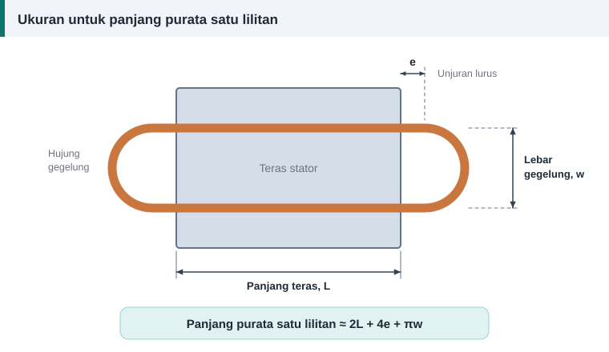

Dawai dan penebat
Mengira Panjang dan Berat Dawai Kuprum untuk Lilitan Semula
Kehabisan dawai ketika tinggal dua gegelung ialah kesilapan yang mahal. Tiga langkah kiraan memberi berat kuprum yang perlu dibeli sebelum kerja bermula.


Langkah 1: panjang purata satu lilitan
Cara paling tepat ialah mengukur satu gegelung lama, atau melilit seutas tali mengikut laluan gegelung dan mengukur tali itu. Jika belitan lama tiada, anggarkan:
Panjang purata satu lilitan ≈ 2L + 4e + π × w
- L ialah panjang teras.
- e ialah unjuran lurus dawai di luar teras sebelum ia membengkok, sekitar 10 mm untuk motor kecil.
- w ialah lebar gegelung, iaitu jarak antara dua alur yang didudukinya, diukur di pertengahan kedalaman alur.
Rumus ini menganggap hujung gegelung berbentuk separuh bulatan, sama seperti rumus gegelung bulat dalam panduan amalan baik EASA/AEMT.
Langkah 2: jumlah panjang
Jumlah panjang = lilitan per gegelung × bilangan gegelung × panjang purata × bilangan lembar
Langkah 3: berat
Berat (kg) = panjang (m) × luas (mm²) × 8.9 ÷ 1000
Angka 8.9 ialah ketumpatan kuprum dalam gram per sentimeter padu.
Contoh
Belitan mempunyai 104 lilitan setiap gegelung, 12 gegelung, panjang purata 420 mm dan dawai 0.67 mm (0.3526 mm²) satu lembar.
- Panjang = 104 × 12 × 0.420 = 524 m.
- Berat = 524 × 0.3526 × 8.9 ÷ 1000 = 1.64 kg.
- Tambah 10% untuk wayar sambungan dan sisa: beli kira-kira 1.8 kg.
Berat dan rintangan setiap 100 meter
| Diameter (mm) | Luas keratan (mm²) | Berat setiap 100 m (kg) | Rintangan setiap 100 m pada 20 °C (Ω) |
|---|---|---|---|
| 0.200 | 0.0314 | 0.028 | 54.88 |
| 0.250 | 0.0491 | 0.044 | 35.12 |
| 0.315 | 0.0779 | 0.069 | 22.12 |
| 0.400 | 0.1257 | 0.112 | 13.72 |
| 0.500 | 0.1963 | 0.175 | 8.78 |
| 0.560 | 0.2463 | 0.219 | 7.00 |
| 0.630 | 0.3117 | 0.277 | 5.53 |
| 0.670 | 0.3526 | 0.314 | 4.89 |
| 0.710 | 0.3959 | 0.352 | 4.35 |
| 0.750 | 0.4418 | 0.393 | 3.90 |
| 0.800 | 0.5027 | 0.447 | 3.43 |
| 0.850 | 0.5675 | 0.505 | 3.04 |
| 0.900 | 0.6362 | 0.566 | 2.71 |
| 0.950 | 0.7088 | 0.631 | 2.43 |
| 1.000 | 0.7854 | 0.699 | 2.20 |
| 1.120 | 0.9852 | 0.877 | 1.75 |
| 1.250 | 1.2272 | 1.092 | 1.40 |
| 1.400 | 1.5394 | 1.370 | 1.12 |
| 1.600 | 2.0106 | 1.789 | 0.86 |
| 1.800 | 2.5447 | 2.265 | 0.68 |
| 2.000 | 3.1416 | 2.796 | 0.55 |
Rintangan sebagai semakan
Rintangan dawai kuprum pada 20 °C:
R = 0.01724 × panjang (m) ÷ luas (mm²)
Bandingkan rintangan fasa yang dikira dengan bacaan meter selepas melilit. Perbezaan besar menandakan salah kira lilitan, salah saiz dawai atau sambungan yang lemah. Untuk suhu selain 20 °C:
R2 = R1 × (235 + T2) ÷ (235 + T1)
Contoh: rintangan 8.58 Ω pada 20 °C menjadi 8.58 × 310 ÷ 255 = 10.43 Ω pada 75 °C.
Mengapa panjang purata penting
Hujung belitan tidak menghasilkan tork. Ia hanya menambah rintangan dan haba. Panduan amalan baik EASA/AEMT menekankan bahawa panjang purata lilitan belitan baharu tidak boleh melebihi yang asal, dan lebih pendek adalah lebih baik.
Menganggar daripada belitan lama
Timbang kuprum lama selepas sisa penebat dibersihkan. Berat itu, ditambah sedikit lebihan, ialah anggaran pantas yang baik jika saiz dawai dan bilangan lilitan dikekalkan. Tab "Panjang dan berat" pada kalkulator memberi angka yang sama daripada ukuran gegelung.
Rujukan dan bacaan lanjut
Artikel berkaitan
Jadual Saiz Dawai SWG, AWG dan Milimeter untuk Lilitan Motor
Jadual rujukan pantas menukar nombor tolok SWG dan AWG kepada diameter milimeter, luas keratan dan saiz metrik terdekat bagi dawai kuprum berenamel untuk lilitan motor.
Contoh Pengiraan Penuh: Motor 1.1 kW, 4 Kutub, 24 Alur
Ikuti pengiraan lengkap belitan motor 1.1 kW daripada ukuran teras hingga bilangan lilitan, saiz dawai, faktor isian dan berat kuprum, sama seperti keputusan kalkulator.
Memilih Saiz Dawai Belitan: Ketumpatan Arus dan Luas Keratan
Dawai terlalu halus cepat panas, dawai terlalu tebal tidak muat dalam alur. Ketumpatan arus membantu memilih luas keratan kuprum yang seimbang untuk setiap motor.